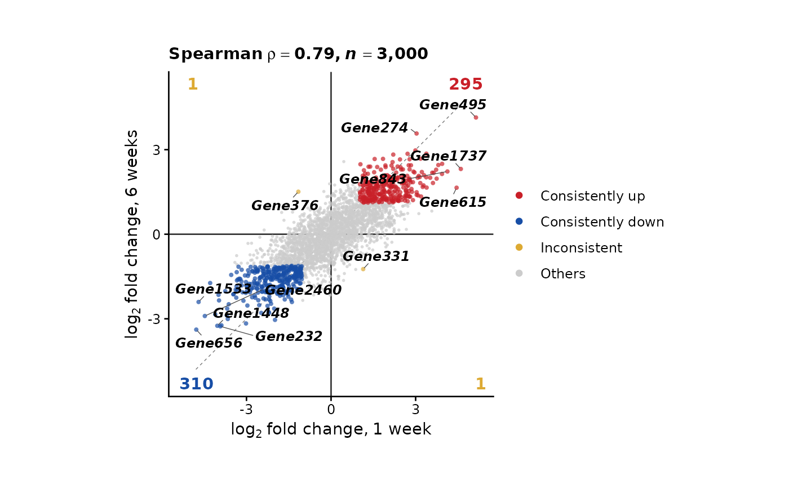

Quadrant plot of the log fold changes of two DE comparisons
Source:R/quadrant_plot.R
plot_fc_quadrant.RdPlots, for every feature measured in both comparisons, its
log2 fold change in one (x) against the other (y), coloured by
where it is significant: in both, with the same or opposite
signs, in one only, or in neither. Shows how far two
comparisons agree (e.g. two time points, two tissues, or RNA
and chromatin), with counts of features significant in both
per quadrant, the correlation of the fold changes, the y = x
diagonal and labels of the top features. Square panel of a
fixed size; save it with save_plot; the joined
table behind it is returned by export_source_data.
Usage
plot_fc_quadrant(
de.x,
de.y,
name.x = "x",
name.y = "y",
method = c("auto", "edgeR", "DESeq2", "limma", "seurat"),
feature.col = NULL,
logfc.col = NULL,
p.col = NULL,
padj.col = NULL,
map.y = NULL,
map.summary = c("min_padj", "max_abs"),
padj.cutoff = 0.05,
logfc.cutoff = 0,
categories = c("both", "x_only", "y_only"),
show.counts = TRUE,
correlation = c("spearman", "pearson", "none"),
cor.on = c("all", "significant"),
diagonal = TRUE,
trend = FALSE,
equal.axes = TRUE,
label = c("top", "selected", "none"),
label.n = 5,
label.features = NULL,
label.size = NULL,
italic.genes = TRUE,
cols = NULL,
pt.size = 1,
alpha = 0.7,
raster = NULL,
raster.dpi = 1000,
panel.width = 3,
panel.height = panel.width,
legend.position = "right",
bg = "transparent",
seed = 42
)Arguments
- de.x, de.y
DE results of the comparisons on x and y: data frames (or DESeq2 `DESeqResults` / edgeR `TopTags`) read with
standardize_de, each with its own detected method; or tables already returned by it. For tables whose columns must be named and differ between the two, standardize each first- name.x, name.y
Names of the comparisons, used in the axis titles and the legend. Default "x" and "y"
- method, feature.col, logfc.col, p.col, padj.col
How to read both tables, as in
standardize_de. Default: detected- map.y
Mapping of the features of `de.y` to the features of `de.x`, e.g. peaks to genes (from a peak annotation such as ChIPseeker's, filtered as wanted, e.g. to promoter peaks): a data frame whose first column holds features of `de.y` and second the genes, or a character vector of genes named by feature. Features of `de.y` without a gene are left out. Default is NULL (features are matched by name)
- map.summary
With `map.y`, how one feature (peak) is chosen per gene when several map to it: "min_padj" (default; the smallest adjusted p-value, ties broken by the largest absolute fold change) or "max_abs" (the largest absolute fold change)
- padj.cutoff
Adjusted p-value below which a feature is significant, default 0.05. One value for both comparisons, or two (x, y)
- logfc.cutoff
Absolute log2 fold change a significant feature must exceed, default 0. One value, or two (x, y)
- categories
Which classes are coloured: any of "both" (significant in both, concordant and discordant), "x_only" and "y_only". The others are drawn in grey with the features significant in neither. Default all three
- show.counts
Whether to print the number of features significant in both in each quadrant, in its corner. Default TRUE
- correlation
Correlation of the fold changes shown above the panel: "spearman" (default), "pearson" or "none"
- cor.on
Features the correlation is computed on: "all" (default; every feature drawn) or "significant" (significant in x or y)
- diagonal
Whether to draw the y = x line (dashed), default TRUE
- trend
Whether to draw a least-squares line of y on x with its 95% confidence band, fitted on the features of the correlation (`cor.on`), default FALSE. Both fold changes are noisy estimates, which biases the slope toward 0 (regression dilution): the line shows the trend, but its slope is not the ratio of the effects
- equal.axes
Whether x and y have the same range, symmetric around 0 (default TRUE), so that the diagonal is the line of equal change. If FALSE, each axis is symmetric around 0 on its own range
- label
Which features to label: "top" (default; the `label.n` features farthest from the origin in each quadrant, among those significant in both, plus any `label.features`), "selected" (only `label.features`) or "none"
- label.n
Number of features labelled per quadrant with `label = "top"`, default 5
- label.features
Features to label, matched exactly (the case of gene symbols matters)
- label.size
Size of the labels in mm. If NULL (default), the small text size of the theme (9 pt)
- italic.genes
Whether labels are gene names, set in italics. Default TRUE. Labels are bold either way
- cols
Colours of the classes: a vector named by any of `concordant`, `discordant`, `x_only`, `y_only` and `ns` (the others keep their default), or five colours in that order. NULL (default) is `c(concordant = "#762A83", discordant = "#1B7837", x_only = "#4393C3", y_only = "#D6604D", ns = "grey80")`
- pt.size
Size of the points, default 1; features significant in both are drawn 1.4 times as large
- alpha
Opacity of the points, default 0.7
- raster
Whether to rasterize the points while keeping text and lines as vectors: NULL (default) rasterizes when more than 5,000 features are drawn, or TRUE / FALSE
- raster.dpi
Resolution of the rasterized points, default 1000
- panel.width
Width of the panel in inches, default 3
- panel.height
Height of the panel in inches. Default is `panel.width` (a square panel)
- legend.position
Position of the legend, default "right"
- bg
Background colour, default is "transparent"
- seed
Random seed for the placement of labels, default is 42
Details
A feature is significant in a comparison when its adjusted p-value is below `padj.cutoff` and its absolute log2 fold change above `logfc.cutoff`; features with an NA adjusted p-value (e.g. DESeq2 independent filtering) are not significant. Features without a fold change in either table are not drawn.
The correlation describes the agreement of all fold changes, most of them small and noisy; `cor.on = "significant"` restricts it to the features changed in at least one comparison. Neither is a test of whether the two comparisons share biology.
The source data (export_source_data) hold one row per
drawn feature: `feature`, `logfc_x`, `padj_x`, `logfc_y`, `padj_y`,
`category`, `labelled` and, with `map.y`, the feature of `de.y` chosen
(`feature_y`) and the number mapped to the gene (`n_mapped`).
Examples
set.seed(1)
genes <- paste0("Gene", 1:3000)
shared <- rnorm(3000, sd = 1.2)
de1 <- data.frame(logFC = shared + rnorm(3000, sd = 0.5), logCPM = 5, row.names = genes)
de2 <- data.frame(logFC = 0.7 * shared + rnorm(3000, sd = 0.5), logCPM = 5, row.names = genes)
de1$PValue <- 2 * pnorm(-abs(de1$logFC) / 0.45)
de2$PValue <- 2 * pnorm(-abs(de2$logFC) / 0.45)
de1$FDR <- p.adjust(de1$PValue, "BH")
de2$FDR <- p.adjust(de2$PValue, "BH")
plot_fc_quadrant(de1, de2, name.x = "1 week", name.y = "6 weeks")
#> Detected edgeR results (logFC, PValue, FDR)
#> Detected edgeR results (logFC, PValue, FDR)
#> 3000 feature(s) in both comparisons (3000 in x, 3000 in y)

if (FALSE) { # \dontrun{
# RNA vs ATAC: peaks mapped to genes, most significant peak per gene
peak2gene <- data.frame(peak = anno$peak_id, gene = anno$SYMBOL)
p <- plot_fc_quadrant(rna_de, atac_de, name.x = "RNA", name.y = "ATAC", map.y = peak2gene)
save_plot(p, "quadrant.pdf")
} # }